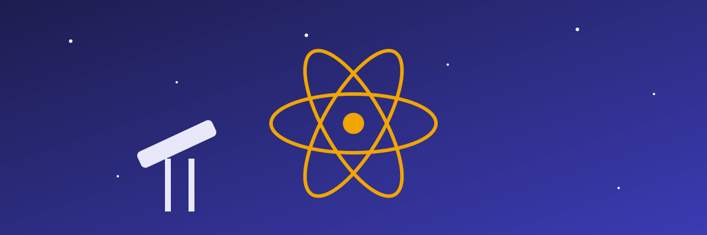

Tri ditë eksperimentesh, ligjëratash dhe punëtorish për të gjitha moshat.
Programi i aktiviteteve
-
Astronomi
Nata e yjeve me teleskop
Detajet për Natën e yjeve -
Kimi
Reaksione me ngjyra
Detajet për Reaksione me ngjyra -
Robotikë
Ndërto robotin tënd të parë
Detajet për Ndërto robotin tënd -
Biologji
Bota nën mikroskop
Detajet për Bota nën mikroskop -
Fizikë
Si vepron elektriciteti statik dhe pse flokët ngrihen kur e prek topin e gjeneratorit Van de Graaff?
Detajet për Elektriciteti statik -
Informatikë
Supercalifragilisticexpialidocious_algoritmet_e_kerkimit_ne_grafe
Detajet për Algoritmet e kërkimit